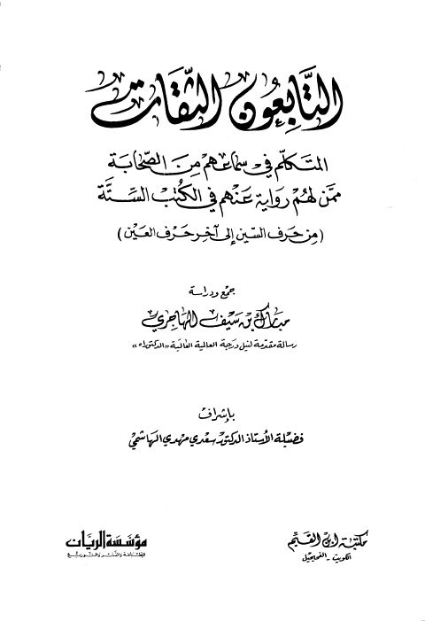

Downloads need an internet connection.
التابعون الثقات المتكلم في سماعهم من الصحابة ممن لهم رواية عنهم في الكتب الستة من حرف السين إلى آخر حرف العين جمعًا ودراسة
Authors: مبارك سيف الهاجري
Editors: سعدي الهاشمي
Publishers: مكتبة ابن القيم مؤسسة الريان
**▫️ العنوان: التابعون الثقات المتكلم في سماعهم من الصحابة ممن لهم رواية عنهم في الكتب الستة من حرف السين إلى آخر حرف العين جمعًا ودراسة** ▪️ المؤلف: #مبارك_سيف_الهاجري ▫️ المحقق: #سعدي_مهدي_الهاشمي ▪️ الناشر: #مكتبة_ابن_القيم • #مؤسسة_الريان ▫️ بلد النشر: الفحيحيل، #الكويت ▪️ الطبعة: 1 ▫️ عدد الأجزاء: 2 ▪️ الصفحات: 1041 ▫️ نوع الوعاء: #كتاب ▪️ التصنيف الرئيسي: #الحديث_وعلومه ▫️ التصنيف الفرعي: #الجرح_والتعديل ۪